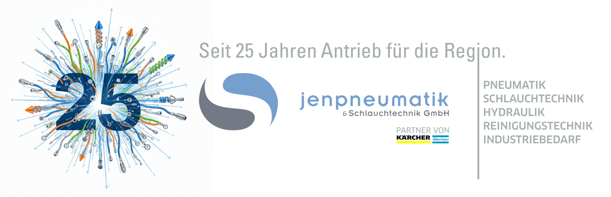

Willkommen bei JENPNEUMASTER – Pneumatik-Portal
Dieses interaktive Ingenieurs-Tool veranschaulicht den inneren Aufbau von Pneumatikzylindern nach ISO 15552 und ermöglicht die präzise, dynamische Berechnung von Aus- und Einfahrkräften. Ingenieure und Techniker können hier Wirkflächen nachvollziehen, Betriebsdrücke stufenlos simulieren und genormte sowie individuelle Zylinderdaten direkt für die Konstruktion auslegen.
3D-Schnittmodell (Mit Maus drehbar)
Erläuterung der Wirkflächen
Im Zylinderrohr wirkt der Druck auf unterschiedliche Flächen, je nach Bewegungsrichtung:
Volle Kolbenfläche:
$\left(A = \frac{\pi}{4} \cdot d^2\right)$
Maximale Vorschubkraft auf der reinen Kreisfläche.
Ringfläche (abzgl. Stange):
$\left(A_{\text{Ring}} = \frac{\pi}{4} \cdot (d^2 - d_{\text{Stange}}^2)\right)$
Reduzierte Fläche beim Rückhub.
Interaktiver Zylinder-Kraftrechner (ISO 15552)
Wähle den Kolbendurchmesser (der Stangendurchmesser wird normgerecht voreingestellt, bleibt aber frei anpassbar) und regle den Druck.